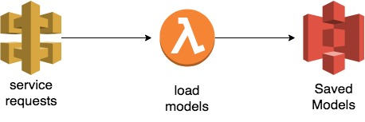

in the last post, we talked about how to deploy a Machine learning trained model on Kubernates.
Here is another way of deploying ML models: AWS lambda + API gateway

Basically, your model (mlpreg.pkl) will be stored in S3, your lambda function will download the model use it to make predictions, another call will allow you to get the model hyperparameters, and sent it back to the user.

to deploy AWS services, we will use a framework called Serverless
serverless allow you with a single configuration file to define functions, create resources, declare permissions, configure endpoints …
serverless uses one main config file and one or multiple code files :
- handler.py : the lambda function
- serverless.yml : serverless configuration file
here is what the serverless configuration file for this example would look like :
[code]
service: deploy-ml-service
plugins:
– serverless-python-requirements
provider:
name: aws
runtime: python2.7
iamRoleStatements:
– Effect: Allow
# Note: just for the demo, we are giving full access to s3
Action:
– s3:*
Resource: “*”
functions:
predict:
handler: handler.predict
events:
– http:
path: predict
method: post
cors: true
integration: lambda
getModelInfo:
handler: handler.getModelInfo
events:
– http:
path: params
method: post
cors: true
integration: lambda[/code]
as described in the example we will create two functions one will make a prediction using the model we built in the last post, the other one will display the model hyperparameters :
- predict
- getModelInfo
to load the model we have :
- load_model : loading the stored model from S3
handler.py
[code]
from sklearn.externals import joblib
import boto3
BUCKET_NAME = ‘asset-s3-uploader-02141’
def predict(event,context):
input = event[“body”][“input”]
modelName = event[“body”][“model_name”]
data = float(input)
return loadModel(modelName).predict(data)[0]
def loadModel(model):
s3_client = boto3.client(‘s3’)
download_path = ‘/tmp/model.pkl’
s3_client.download_file(BUCKET_NAME, model, ‘/tmp/model.pkl’)
return joblib.load(download_path)
def getModelInfo(event,context):
model = event[“body”][“model_name”]
return loadModel(model).get_params()
[/code]
$Serverless Deploy !
yep that’s all it takes, and your services will be deployed in seconds:

Run the tests:
getting the model Hyperparameters :
[code]
root@58920085f9af:/tmp/deploy# curl -s -d “model_name=mlpreg.pkl” https://abcefgh123.execute-api.us-east-1.amazonaws.com/dev/params | python -m json.tool
{
“activation”: “relu”,
“alpha”: 0.001,
“batch_size”: “auto”,
“beta_1”: 0.9,
“beta_2”: 0.999,
“early_stopping”: false,
“epsilon”: 1e-08,
“hidden_layer_sizes”: [
1000
],
“learning_rate”: “constant”,
“learning_rate_init”: 0.01,
“max_iter”: 1000,
“momentum”: 0.9,
“nesterovs_momentum”: true,
“power_t”: 0.5,
“random_state”: 9,
“shuffle”: true,
“solver”: “adam”,
“tol”: 0.0001,
“validation_fraction”: 0.1,
“verbose”: false,
“warm_start”: false
}
[/code]
Making Predictions :
[code]
root@58920085f9af:/tmp/deploy# curl -s -d “input=1&model_name=mlpreg.pkl” https://abcdefg123.execute-api.us-east-1.amazonaws.com/dev/predict | python -m json.tool
0.13994134155335683
[/code]